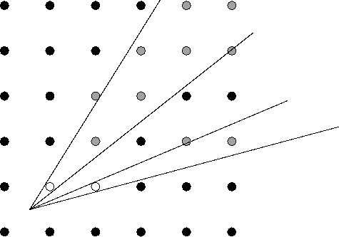
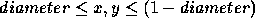
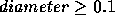

| Forests |
The saying ``You can't see the wood for the trees'' is not only a cliche, but is also incorrect. The real problem is that you can't see the trees for the wood. If you stand in the middle of a ``wood'' (in NZ terms, a patch of bush), the trees tend to obscure each other and the number of distinct trees you can actually see is quite small. This is especially true if the trees are planted in rows and columns (as in a pine plantation), because they tend to line up. The purpose of this problem is to find how many distinct trees you can see from an arbitrary point in a pine plantation (assumed to stretch ``for ever'').

You can only see a distinct tree if no part of its trunk is obscured by a nearer tree--that is if both sides of the trunk can be seen, with a discernible gap between them and the trunks of all trees closer to you. Also, you can't see a tree if it is apparently ``too small''. For definiteness, ``not too small'' and ``discernible gap'' will mean that the angle subtended at your eye is greater than 0.01 degrees (you are assumed to use one eye for observing). Thus the two trees marked obscure at least the trees marked from the given view point.
Write a program that will determine the number of trees visible under these assumptions, given the diameter of the trees, and the coordinates of a viewing position. Because the grid is infinite, the origin is unimportant, and the coordinates will be numbers between 0 and 1.
Input will consist of a series of lines, each line containing three real numbers of the form 0.nn. The first number will be the trunk diameter--all trees will be assumed to be cylinders of exactly this diameter, with their centres placed exactly on the points of a rectangular grid with a spacing of one unit. The next two numbers will be the x and y coordinates of the observer. To avoid potential problems, say by being too close to a tree, we will guarantee that  . To avoid problems with trees being too small you may assume that  . The file will be terminated by a line consisting of three zeroes.
Output will consist of a series of lines, one for each line of the input. Each line will consist of the number of trees of the given size, visible from the given position.
0.10 0.46 0.38 0 0 0
128